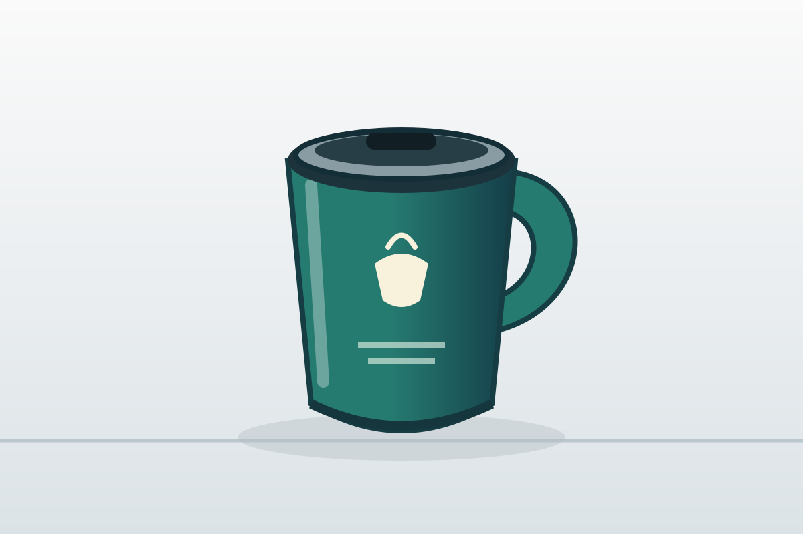
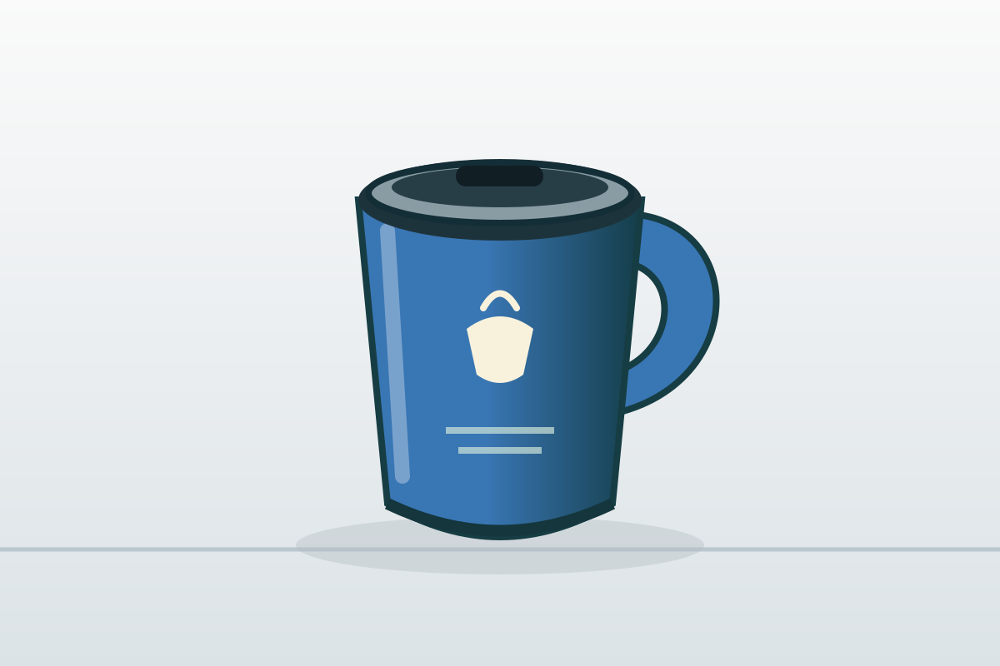
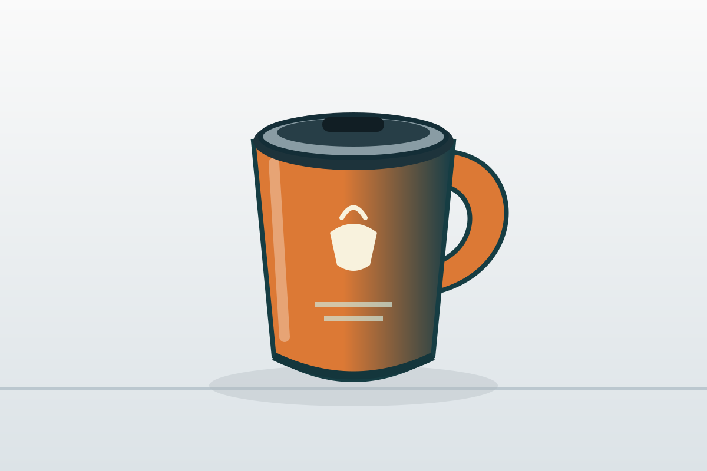
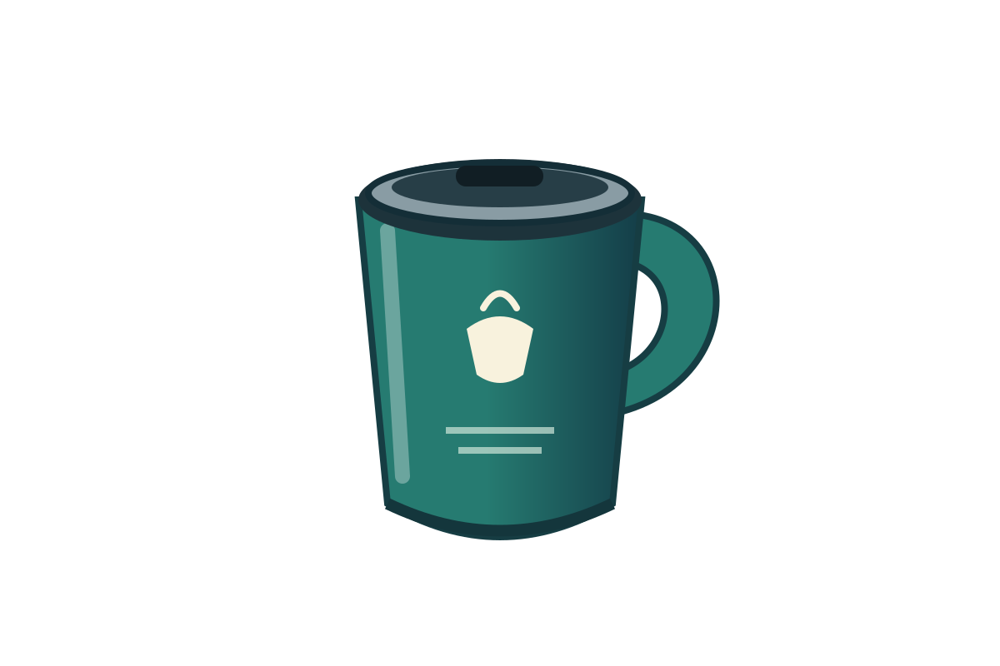
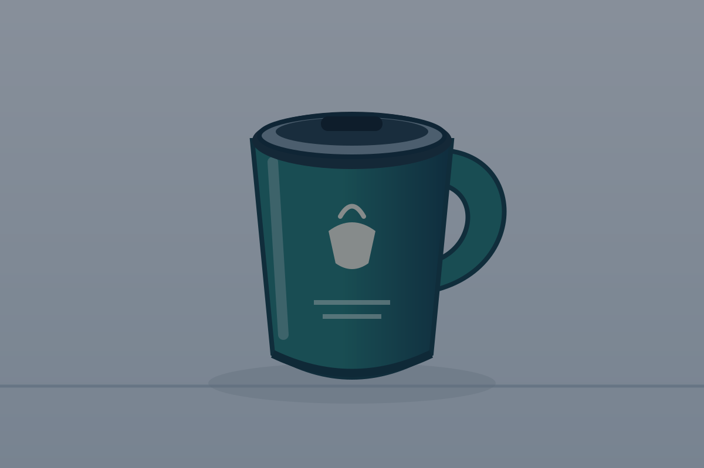
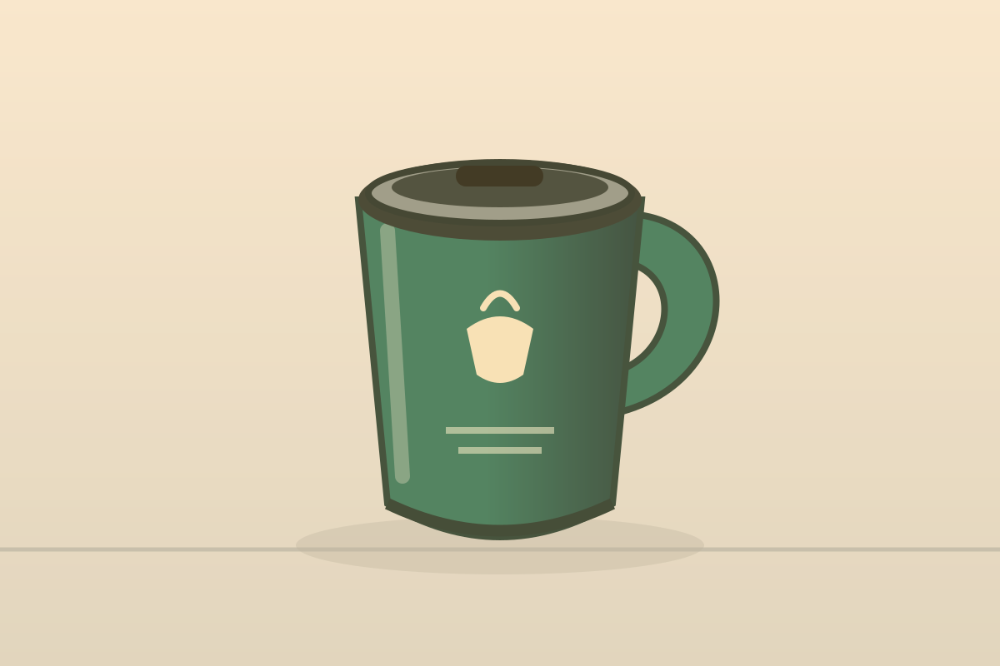
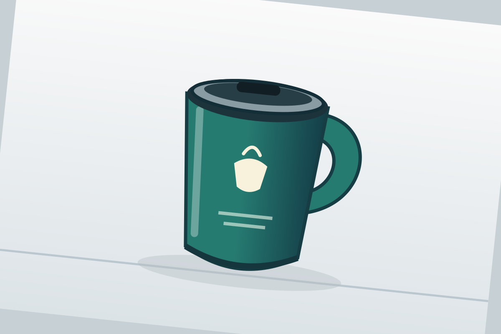
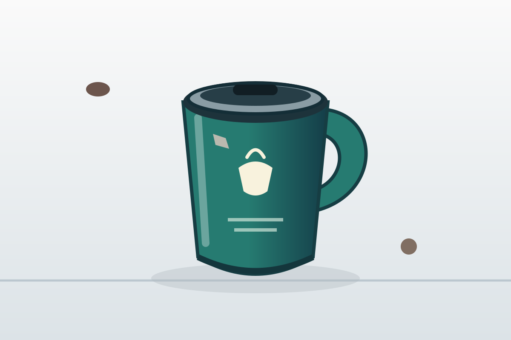

Комп. графика — учебни изображения
Това са цифрови учебни илюстрации, създадени за упражненията, а не фотографии на реални продукти. Всички PNG са 1200 × 800 px. Избирайте файла, посочен в урока.
















Векторна начална проба
logo-start.svg — отделни фигури за сравнение с растерна графика. За самостоятелните знаци и контролните създайте собствена разработка.

Разрешение за използване
Тези осем PNG и началният SVG са предоставени под CC0 1.0. Можете да ги копирате и преработвате. За проследимост в учебния проект посочвайте тази страница като източник. Разрешението не обхваща външните материали.